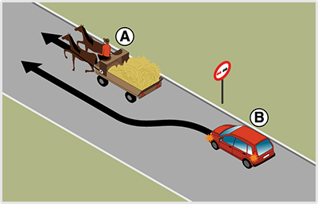
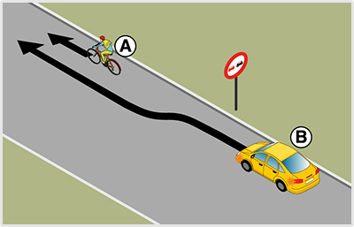
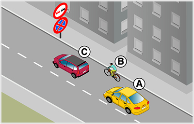
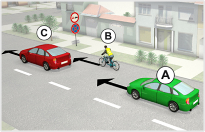
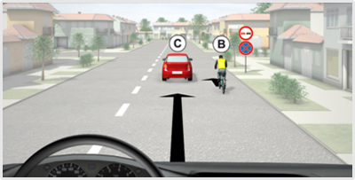
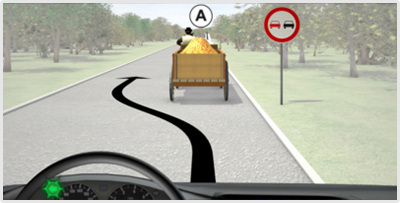
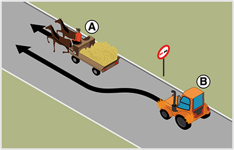

- 133. Mi a jelzőtábla neve? #703437
- ’Előzni tilos’
- ’Személygépkocsival előzni tilos’
- ’Gépjárművel előzni tilos’
- 134. Gépjárművel közlekedve az alábbiak közül milyen járművet szabad megelőzni e jelzőtáblát követően? #703439
- Az állati erővel vont járművet.
- A mezőgazdasági vontatót.
- A lassú járművet.

- 135. Megszünteti-e ez a jelzőtábla a ’Megfordulni tilos’ jelzőtábla hatályát? #703442
- Igen.
- Nem.

- 136. Mit jelez ez a jelzőtábla? #703472
- Az úton tilos a járműveknek a jelzőtáblán megjelöltnél kisebb távolságban követniük egymást.
- Az úton tilos a gépjárműveknek a jelzőtáblán megjelöltnél kisebb távolságban követniük egymást.
- Az úton tilos a személygépkocsiknak a jelzőtáblán megjelöltnél kisebb távolságban követniük egymást.

- 137. Milyen járműszerelvénnyel szabad behajtani ennél a jelzőtáblánál? #703473
- A vonójárműből és egytengelyes vagy félpótkocsiból álló járműszerelvénnyel.
- Semmilyen járműszerelvénnyel.
- A személygépkocsiból és kéttengelyes pótkocsiból álló járműszerelvénnyel.
- 138. Az alábbiak közül mely jelzőtáblák tilalmát szünteti meg ez a jelzőtábla? #703474
- Az ’Előzni tilos’, a ’Megfordulni tilos’ és a ’Sebességkorlátozás’ jelzőtáblákét.
- Az ’Előzni tilos’, a ’Megfordulni tilos’ és a ’Kötelező haladási irány’ jelzőtáblákét.
- Az ’Előzni tilos’, a ’Megfordulni tilos’ és a ’Kötelező legkisebb sebesség’ jelzőtáblákét.

- 139. Mit jelez ez a táblakombináció? #703475
- Azt, hogy az útra a kiegészítő táblán jelzett időszakban mindkét irányból tilos behajtani.
- Azt, hogy az útra a kiegészítő táblán jelzett időszakon kívül mindkét irányból tilos behajtani.
- Azt, hogy az útra a kiegészítő táblán jelzett időszakban ebből az irányból tilos behajtani, de parkolni szabad.

- 140. Mi a jelzőtábla neve? #703476
- ’Gépjárművel, mezőgazdasági vontatóval és lassú járművel behajtani tilos’
- ’Személygépkocsival behajtani tilos’
- ’Személygépkocsival és mopedautóval behajtani tilos’

- 141. Mit jelez ez a jelzőtábla? #703477
- Azt, hogy a ’Korlátozott sebességű övezet vége’ tábláig tilos a megjelöltnél nagyobb sebességgel haladni.
- Azt, hogy a következő útkereszteződésig tilos a megjelöltnél nagyobb sebességgel haladni.
- Azt, hogy a ’Lakott terület vége’ tábláig tilos a megjelöltnél nagyobb sebességgel haladni.

- 142. Szabad-e segédmotoros kerékpárral behajtani a jelzőtáblával jelzett útra? #714909
- Nem.
- Igen.
- Csak akkor, ha a járművezető a jelzőtáblával jelzett területen lakik.

- 143. Szabad-e ennél a jelzésnél megállás nélkül továbbhaladni? #714910
- Nem.
- Igen, kivéve határátkelőhelyen.
- Igen, ha a vám- és pénzügyőr jelzéséből más nem következik.

- 144. Szabad-e megfordulni a jelzőtáblát követő útkereszteződésben? #714911
- Igen.
- Nem.
- 145. Megszünteti-e az ábrán látható jelzőtábla a ’Megfordulni tilos’ jelzőtábla tilalmát? #714914
- Igen.
- Nem.

- 146. Szabad-e megfordulni a jelzőtáblát követő útkereszteződésben? #714915
- Nem.
- Igen, de csak segédmotoros kerékpárral.
- Igen, egy nyomon haladó járművel.

- 147. A képen látható helyen szabad-e a ’B’ jelű személygépkocsival megelőzni az ’A’ jelű állati erővel vontatott járművet? #715025
- Igen.
- Nem, mert a jelzőtáblával jelzett előzési tilalmat be kell tartania.

- 148. A képen látható helyen szabad-e a ’B’ jelű személygépkocsival megelőzni az ’A’ jelű kerékpárost? #715028
- Igen.
- Nem, mert a jelzőtáblával jelzett előzési tilalmat be kell tartania.

- 149. A képen látható helyen az ’A’ jelű gépkocsi a ’B’ jelű kerékpárost szeretné megelőzni. Mikor szabályos ez? #715123
- Akkor is szabályos, ha az ’Előzni tilos’ jelzőtábla után fejezi be az előzést.
- Csak akkor szabályos, ha az ’Előzni tilos’ jelzőtábláig befejezi az előzést.
- Soha nem szabályos, mert ezen az úton a jelzőtábla előtt sem előzhet kerékpárost.
- 150. Az ’A’ jelű gépkocsi az előtte haladó járművek előzését már csak az ’Előzni tilos’ jelzőtábla után tudná befejezni. Válassza ki a helyes állítást! #715124
- Az ’Előzni tilos’ jelzőtábla után csak a ’B’ jelű kerékpárost szabad megelőzni.
- Az ’Előzni tilos’ jelzőtábla után csak a ’C’ jelű személygépkocsit szabad megelőzni.
- Az ’Előzni tilos’ jelzőtábla után mindkét járművet szabad megelőzni.
- 151. Ön az ’A’ jelű gépkocsit vezeti. Megelőzheti a képen látható helyen a ’B’ jelű kerékpárost, ha az előzést már csak az ’Előzni tilos’ jelzőtábla után tudná befejezni? #721303
- Igen.
- Nem.
- Csak akkor, ha előzés közben nem hajt át a menetirány szerinti bal oldalra.

- 152. Ön az ’A’ jelű gépkocsit vezeti. Megelőzheti a képen látható helyen a ’B’ jelű kerékpárost, ha az előzést már csak az ’Előzni tilos’ jelzőtábla után tudná befejezni? #722245
- Igen.
- Nem.
- Csak akkor, ha előzés közben nem hajt át a menetirány szerinti bal oldalra.

- 153. Ön a kormánykerékkel jelzett járművet vezeti. Megelőzheti a képen látható helyen a ’B’ jelű kerékpárost, ha az előzést már csak az ’Előzni tilos’ jelzőtábla után tudná befejezni? #722256
- Igen.
- Nem.
- Csak akkor, ha előzés közben nem hajt át a menetirány szerinti bal oldalra.

- 154. Ön a kormánykerékkel jelzett gépjárművet vezeti. Szabad-e megelőznie az ábrázolt helyen az ’A’ jelű, állati erővel vontatott járművet? #723280
- Igen.
- Nem, mert a jelzőtábla tiltja ezt az előzést.

- 155. A képen látható helyen megelőzheti-e a ’B’ jelű mezőgazdasági vontató az ’A’ jelű állati erővel vontatott járművet? #723721
- Nem, mert a jelzőtáblával jelzett előzési tilalmat be kell tartania.
- Igen, mert a jelzőtábla után az állati erővel vontatott jármű mezőgazdasági vontatóval megelőzhető.
- Igen, mert nincs záróvonal felfestve.